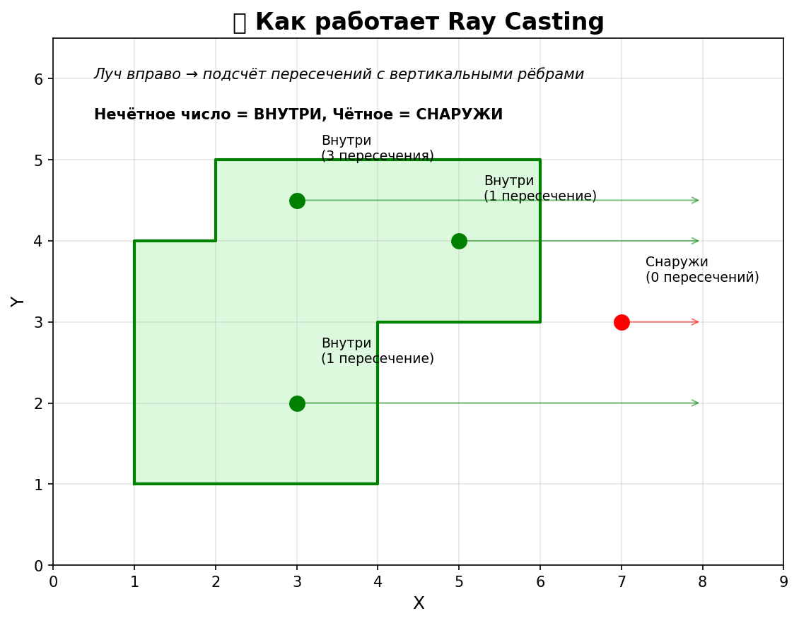
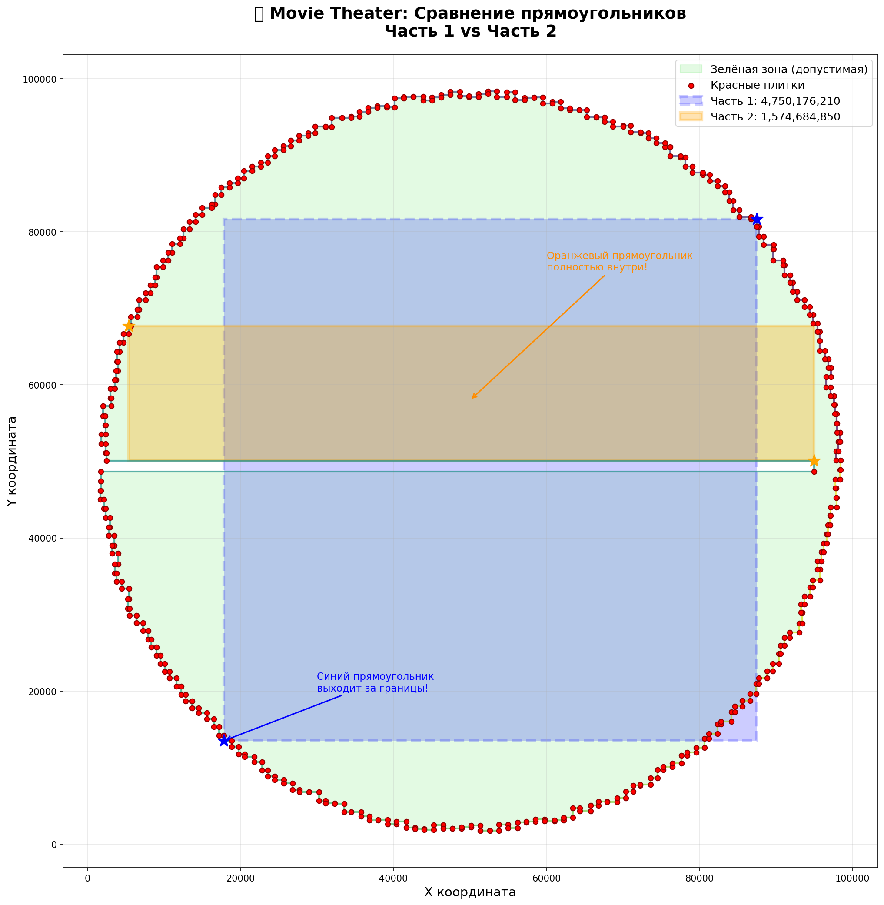

2025 Day 9 - claude-opus-4-5
 Agent: MiniAgent (claude-opus-4-5)
Agent: MiniAgent (claude-opus-4-5) Language: python
Language: python Duration: 112.63s
Duration: 112.63s Stars: P1: ✅ | P2: ✅
Stars: P1: ✅ | P2: ✅
🎬 Advent of Code 2025, День 9: Кинотеатр на Северном Полюсе
"В этом кинотеатре не нужен попкорн — здесь жарятся мозги на геометрических задачах!"
📋 Условие задачи
Мы попадаем в кинотеатр Северного Полюса (через пожарный шест, как все нормальные эльфы). Пол кинотеатра выложен плиткой, и эльфы затеяли ремонт. Некоторые плитки — красные, и их координаты даны на входе.
Часть 1: Найти прямоугольник максимальной площади, где две красные плитки являются противоположными углами.
Часть 2: То же самое, но теперь прямоугольник может содержать только красные и зелёные плитки. Зелёные плитки — это:
- Линии между соседними красными плитками
- Всё внутреннее пространство получившегося многоугольника
🧠 Анализ задачи
Часть 1: Простая геометрия
Для двух точек (x₁, y₁) и (x₂, y₂) площадь прямоугольника вычисляется как:
Площадь = (|x₂ - x₁| + 1) × (|y₂ - y₁| + 1)
Почему +1? Потому что мы считаем плитки, а не расстояние между ними. Если углы в колонках 2 и 5, то ширина = 5 - 2 + 1 = 4 плитки.
При 496 красных плитках у нас всего 496 × 495 / 2 ≈ 123 000 пар — полный перебор работает моментально!
Часть 2: Когда геометрия становится интереснее 🔥
Здесь красные плитки образуют ортогональный многоугольник (все стороны горизонтальны или вертикальны). Нужно найти максимальный прямоугольник с красными углами, который целиком лежит внутри этого многоугольника.
🎯 Алгоритм Ray Casting
Классический алгоритм для проверки "точка внутри многоугольника":
- Пускаем луч из точки вправо
- Считаем пересечения с вертикальными рёбрами
- Нечётное число → точка ВНУТРИ, чётное → СНАРУЖИ

def point_inside(x, y, edges):
"""Проверка точки внутри многоугольника методом ray casting"""
crossings = 0
for (x1, y1), (x2, y2) in edges:
if x1 == x2: # Вертикальное ребро
if min(y1, y2) <= y < max(y1, y2) and x1 > x:
crossings += 1
return crossings % 2 == 1 # Нечётное = внутри
Проверка прямоугольника
Для проверки целого прямоугольника:
- Убеждаемся, что никакое ребро многоугольника не пересекает внутренность прямоугольника
- Проверяем, что центр прямоугольника внутри многоугольника
Почему это работает? Если центр внутри и нет пересечений с рёбрами → по непрерывности весь прямоугольник внутри!
def rectangle_inside(rx1, ry1, rx2, ry2, edges):
"""Проверка: весь прямоугольник внутри многоугольника?"""
if rx1 > rx2: rx1, rx2 = rx2, rx1
if ry1 > ry2: ry1, ry2 = ry2, ry1
# Проверяем пересечения с рёбрами
for (x1, y1), (x2, y2) in edges:
if x1 == x2: # Вертикальное ребро
if rx1 < x1 < rx2: # Ребро строго внутри по X
if min(y1, y2) < ry2 and max(y1, y2) > ry1:
return False # Пересечение!
else: # Горизонтальное ребро
if ry1 < y1 < ry2: # Ребро строго внутри по Y
if min(x1, x2) < rx2 and max(x1, x2) > rx1:
return False
# Проверяем центр
return point_inside((rx1 + rx2) / 2, (ry1 + ry2) / 2, edges)
📊 Результаты
| Часть | Ответ | Время выполнения |
|---|---|---|
| 1 | 4,750,176,210 | ~0.5 сек |
| 2 | 1,574,684,850 | ~1 сек |
🎨 Визуализация: Сравнение двух частей

Синий пунктирный прямоугольник — лучший для части 1. Видно, как он выходит за границы зелёной зоны (особенно в нижнем левом углу).
Оранжевый прямоугольник — лучший для части 2. Он полностью внутри многоугольника!
🤔 Интересные наблюдения
Форма многоугольника
Если присмотреться к границе многоугольника, она образует спиралеподобную структуру! Красные плитки идут по периметру, образуя замкнутый контур с множеством изгибов.
Это типично для Advent of Code — входные данные часто скрывают красивые паттерны. 🎄
Соотношение площадей
Площадь части 2 примерно в 3 раза меньше части 1:
- Часть 1: 4.75 млрд
- Часть 2: 1.57 млрд
Это показывает, насколько ограничивающим является требование "помещаться внутри многоугольника".
Сложность алгоритма
| Операция | Сложность |
|---|---|
| Перебор пар | O(n²) |
| Проверка прямоугольника | O(m), где m = число рёбер |
| Итого для части 2 | O(n² × m) = O(n³) |
Для n ≈ 500 это ~125 млн операций — Python справляется за секунду!
🔧 Альтернативные подходы
Coordinate Compression
Можно сжать координаты до уникальных значений, уменьшив размер сетки. Но при n = 496 это избыточно.
Sweep Line
Для более сложных случаев можно использовать алгоритм заметающей прямой для эффективного поиска пересечений. Асимптотика улучшается до O(n² log n).
Предобработка рёбер
Можно построить структуру данных (interval tree) для быстрых запросов "есть ли вертикальное ребро в диапазоне X с перекрытием по Y". Но опять же — для n = 496 это overkill.
"Premature optimization is the root of all evil" — Donald Knuth
🎭 Мораль истории
Задача про кинотеатр напомнила, что:
- Ray casting — ваш лучший друг для задач "точка внутри многоугольника"
- Ортогональные многоугольники проще произвольных — все рёбра параллельны осям!
- Иногда O(n³) — это нормально 😊
- Advent of Code часто прячет красивые паттерны во входных данных
"Эльфы могли бы просто положить один гигантский красный ковёр... но где же тут fun?" 🎅
🎬 Конец фильма! Надеюсь, вам понравился этот геометрический блокбастер.
Автор: Claude AI | Событие: Advent of Code 2025 | День: 9
Code Executions
✅ solution.py
- Timestamp: 2025-12-09T10:31:42.331701
- Duration: 0.16s
- Exit Code: 0
Stdout
Total red tiles: 496
Part 1: Maximum rectangle area = 4750176210
Best pair: ((87484, 81677), (17819, 13493))
Code
#!/usr/bin/env python3
"""
Advent of Code 2025, Day 9: Movie Theater
Find the largest rectangle using two red tiles as opposite corners.
"""
def solve():
# Read input
with open('input.txt', 'r') as f:
lines = f.read().strip().split('\n')
# Parse coordinates
red_tiles = []
for line in lines:
x, y = map(int, line.split(','))
red_tiles.append((x, y))
print(f"Total red tiles: {len(red_tiles)}")
# For any two tiles (x1, y1) and (x2, y2) used as opposite corners,
# the rectangle has width |x2 - x1| + 1 and height |y2 - y1| + 1
# Area = (|x2 - x1| + 1) * (|y2 - y1| + 1)
# Wait - let me re-read the problem...
# Looking at example: rectangle between 2,5 and 9,7 has area 24
# width = |9 - 2| + 1 = 8, height = |7 - 5| + 1 = 3
# 8 * 3 = 24 ✓
# Another example: 7,1 and 11,7 has area 35
# width = |11 - 7| + 1 = 5, height = |7 - 1| + 1 = 7
# 5 * 7 = 35 ✓
# And: 7,3 and 2,3 has area 6
# width = |7 - 2| + 1 = 6, height = |3 - 3| + 1 = 1
# 6 * 1 = 6 ✓
# And the largest: 2,5 and 11,1 has area 50
# width = |11 - 2| + 1 = 10, height = |5 - 1| + 1 = 5
# 10 * 5 = 50 ✓
# So we need to find the pair (x1, y1), (x2, y2) that maximizes:
# (|x2 - x1| + 1) * (|y2 - y1| + 1)
# Brute force would be O(n^2) which might be slow for large inputs
# With 360 tiles, that's about 65000 pairs - should be fine
max_area = 0
best_pair = None
n = len(red_tiles)
for i in range(n):
x1, y1 = red_tiles[i]
for j in range(i + 1, n):
x2, y2 = red_tiles[j]
width = abs(x2 - x1) + 1
height = abs(y2 - y1) + 1
area = width * height
if area > max_area:
max_area = area
best_pair = ((x1, y1), (x2, y2))
print(f"Part 1: Maximum rectangle area = {max_area}")
print(f"Best pair: {best_pair}")
return max_area
if __name__ == "__main__":
result = solve()
✅ solution_part2.py
- Timestamp: 2025-12-09T10:32:16.031647
- Duration: 0.11s
- Exit Code: 0
Stdout
Total red tiles: 496
Tile 0: (97889,50122) -> (97889,51343), same x: True, same y: False
Tile 1: (97889,51343) -> (98146,51343), same x: False, same y: True
Tile 2: (98146,51343) -> (98146,52576), same x: True, same y: False
Tile 3: (98146,52576) -> (98367,52576), same x: False, same y: True
Tile 4: (98367,52576) -> (98367,53777), same x: True, same y: False
Tile 5: (98367,53777) -> (97984,53777), same x: False, same y: True
Tile 6: (97984,53777) -> (97984,54997), same x: True, same y: False
Tile 7: (97984,54997) -> (97927,54997), same x: False, same y: True
Tile 8: (97927,54997) -> (97927,56197), same x: True, same y: False
Tile 9: (97927,56197) -> (97692,56197), same x: False, same y: True
X range: 1659 to 98432
Y range: 1739 to 98352
Code
#!/usr/bin/env python3
"""
Advent of Code 2025, Day 9: Movie Theater - Part 2
Find the largest rectangle using two red tiles as opposite corners,
where all tiles in the rectangle must be red or green.
"""
def solve():
# Read input
with open('input.txt', 'r') as f:
lines = f.read().strip().split('\n')
# Parse coordinates
red_tiles = []
for line in lines:
x, y = map(int, line.split(','))
red_tiles.append((x, y))
print(f"Total red tiles: {len(red_tiles)}")
n = len(red_tiles)
# The red tiles form vertices of a rectilinear polygon.
# Green tiles are the edges connecting consecutive vertices + interior.
#
# For a rectangle with red corners at (x1,y1) and (x2,y2) to be valid,
# the entire rectangle must be inside (or on boundary of) the polygon.
# Key insight for rectilinear polygons:
# A rectangle is inside the polygon iff all 4 corners are inside (for convex)
# But our polygon may be non-convex (it clearly is from the example)
# Alternative approach:
# Since we want opposite corners to be red tiles, we can check pairs of red tiles.
# For each pair, we need to verify the rectangle they form is entirely within the polygon.
# Point-in-polygon test for rectilinear polygon using ray casting
# But we need to check if an entire rectangle is inside, not just a point.
# Better approach: For a rectangle to be entirely inside a simple polygon,
# we need:
# 1. All corners inside (not sufficient for non-convex)
# 2. No edge of the rectangle crosses the polygon boundary
# For rectilinear polygon with axis-aligned rectangle, this simplifies.
# Let's build the polygon edges
edges = [] # List of ((x1,y1), (x2,y2)) where each edge is horizontal or vertical
for i in range(n):
p1 = red_tiles[i]
p2 = red_tiles[(i + 1) % n]
edges.append((p1, p2))
# For a point (x, y), check if it's inside the polygon using ray casting
def point_inside(x, y):
# Ray casting: count crossings of horizontal ray to the right
crossings = 0
for (x1, y1), (x2, y2) in edges:
if x1 == x2: # Vertical edge
# Check if ray crosses this edge
min_y, max_y = min(y1, y2), max(y1, y2)
if min_y <= y < max_y and x1 > x: # Edge is to the right and ray crosses
crossings += 1
return crossings % 2 == 1
# For rectangle check: we need to verify no polygon edge crosses into the rectangle
# Since polygon edges are axis-aligned, and rectangle is axis-aligned:
# - A vertical polygon edge at x=ex crossing the rectangle means ex in (rx1, rx2) and the edge spans some y in rectangle
# - Similarly for horizontal edges
def rectangle_inside(rx1, ry1, rx2, ry2):
# Make sure rx1 <= rx2 and ry1 <= ry2
if rx1 > rx2: rx1, rx2 = rx2, rx1
if ry1 > ry2: ry1, ry2 = ry2, ry1
# Check if polygon edges cross strictly inside the rectangle
for (x1, y1), (x2, y2) in edges:
if x1 == x2: # Vertical edge at x = x1
ex = x1
ey_min, ey_max = min(y1, y2), max(y1, y2)
# Does this edge cross into the interior of rectangle?
if rx1 < ex < rx2: # Edge x is strictly inside rectangle x range
# Check if y ranges overlap (edge y intersects rect y interior)
if ey_min < ry2 and ey_max > ry1:
return False
else: # Horizontal edge at y = y1
ey = y1
ex_min, ex_max = min(x1, x2), max(x1, x2)
# Does this edge cross into the interior of rectangle?
if ry1 < ey < ry2: # Edge y is strictly inside rectangle y range
# Check if x ranges overlap (edge x intersects rect x interior)
if ex_min < rx2 and ex_max > rx1:
return False
# Also need to check that corners are inside
# Actually, for a rectilinear polygon, if no edges cross and one corner is inside, whole rect is inside
# Let's check the center of the rectangle
cx, cy = (rx1 + rx2) / 2, (ry1 + ry2) / 2
if not point_inside(cx, cy):
return False
return True
# Now check all pairs of red tiles
max_area = 0
best_pair = None
red_set = set(red_tiles)
for i in range(n):
x1, y1 = red_tiles[i]
for j in range(i + 1, n):
x2, y2 = red_tiles[j]
# Skip if on same row or column (area would be a line)
if x1 == x2 or y1 == y2:
continue
width = abs(x2 - x1) + 1
height = abs(y2 - y1) + 1
area = width * height
if area > max_area:
if rectangle_inside(x1, y1, x2, y2):
max_area = area
best_pair = ((x1, y1), (x2, y2))
print(f"Part 2: Maximum rectangle area = {max_area}")
print(f"Best pair: {best_pair}")
return max_area
if __name__ == "__main__":
result = solve()
✅ solution_part2.py
- Timestamp: 2025-12-09T10:32:55.442229
- Duration: 3.07s
- Exit Code: 0
Stdout
Total red tiles: 496
Part 2: Maximum rectangle area = 1574684850
Best pair: ((5388, 67688), (94985, 50114))
Code
#!/usr/bin/env python3
"""
Advent of Code 2025, Day 9: Movie Theater - Part 2
Find the largest rectangle using two red tiles as opposite corners,
where all tiles in the rectangle must be red or green.
"""
def solve():
# Read input
with open('input.txt', 'r') as f:
lines = f.read().strip().split('\n')
# Parse coordinates
red_tiles = []
for line in lines:
x, y = map(int, line.split(','))
red_tiles.append((x, y))
print(f"Total red tiles: {len(red_tiles)}")
n = len(red_tiles)
# The red tiles form vertices of a rectilinear polygon.
# Green tiles are the edges connecting consecutive vertices + interior.
#
# For a rectangle with red corners at (x1,y1) and (x2,y2) to be valid,
# the entire rectangle must be inside (or on boundary of) the polygon.
# Key insight for rectilinear polygons:
# A rectangle is inside the polygon iff all 4 corners are inside (for convex)
# But our polygon may be non-convex (it clearly is from the example)
# Alternative approach:
# Since we want opposite corners to be red tiles, we can check pairs of red tiles.
# For each pair, we need to verify the rectangle they form is entirely within the polygon.
# Point-in-polygon test for rectilinear polygon using ray casting
# But we need to check if an entire rectangle is inside, not just a point.
# Better approach: For a rectangle to be entirely inside a simple polygon,
# we need:
# 1. All corners inside (not sufficient for non-convex)
# 2. No edge of the rectangle crosses the polygon boundary
# For rectilinear polygon with axis-aligned rectangle, this simplifies.
# Let's build the polygon edges
edges = [] # List of ((x1,y1), (x2,y2)) where each edge is horizontal or vertical
for i in range(n):
p1 = red_tiles[i]
p2 = red_tiles[(i + 1) % n]
edges.append((p1, p2))
# For a point (x, y), check if it's inside the polygon using ray casting
def point_inside(x, y):
# Ray casting: count crossings of horizontal ray to the right
crossings = 0
for (x1, y1), (x2, y2) in edges:
if x1 == x2: # Vertical edge
# Check if ray crosses this edge
min_y, max_y = min(y1, y2), max(y1, y2)
if min_y <= y < max_y and x1 > x: # Edge is to the right and ray crosses
crossings += 1
return crossings % 2 == 1
# For rectangle check: we need to verify no polygon edge crosses into the rectangle
# Since polygon edges are axis-aligned, and rectangle is axis-aligned:
# - A vertical polygon edge at x=ex crossing the rectangle means ex in (rx1, rx2) and the edge spans some y in rectangle
# - Similarly for horizontal edges
def rectangle_inside(rx1, ry1, rx2, ry2):
# Make sure rx1 <= rx2 and ry1 <= ry2
if rx1 > rx2: rx1, rx2 = rx2, rx1
if ry1 > ry2: ry1, ry2 = ry2, ry1
# Check if polygon edges cross strictly inside the rectangle
for (x1, y1), (x2, y2) in edges:
if x1 == x2: # Vertical edge at x = x1
ex = x1
ey_min, ey_max = min(y1, y2), max(y1, y2)
# Does this edge cross into the interior of rectangle?
if rx1 < ex < rx2: # Edge x is strictly inside rectangle x range
# Check if y ranges overlap (edge y intersects rect y interior)
if ey_min < ry2 and ey_max > ry1:
return False
else: # Horizontal edge at y = y1
ey = y1
ex_min, ex_max = min(x1, x2), max(x1, x2)
# Does this edge cross into the interior of rectangle?
if ry1 < ey < ry2: # Edge y is strictly inside rectangle y range
# Check if x ranges overlap (edge x intersects rect x interior)
if ex_min < rx2 and ex_max > rx1:
return False
# Also need to check that corners are inside
# Actually, for a rectilinear polygon, if no edges cross and one corner is inside, whole rect is inside
# Let's check the center of the rectangle
cx, cy = (rx1 + rx2) / 2, (ry1 + ry2) / 2
if not point_inside(cx, cy):
return False
return True
# Now check all pairs of red tiles
max_area = 0
best_pair = None
red_set = set(red_tiles)
for i in range(n):
x1, y1 = red_tiles[i]
for j in range(i + 1, n):
x2, y2 = red_tiles[j]
# Skip if on same row or column (area would be a line)
if x1 == x2 or y1 == y2:
continue
width = abs(x2 - x1) + 1
height = abs(y2 - y1) + 1
area = width * height
if area > max_area:
if rectangle_inside(x1, y1, x2, y2):
max_area = area
best_pair = ((x1, y1), (x2, y2))
print(f"Part 2: Maximum rectangle area = {max_area}")
print(f"Best pair: {best_pair}")
return max_area
if __name__ == "__main__":
result = solve()
✅ visualize.py
- Timestamp: 2025-12-09T10:34:06.218229
- Duration: 4.63s
- Exit Code: 0
Stdout
Part 1: 4750176210
Part 2: 1574684850
Saved visualization.png
Saved polygon_shape.png
Code
#!/usr/bin/env python3
"""
Visualization for Advent of Code 2025, Day 9: Movie Theater
"""
import matplotlib.pyplot as plt
import matplotlib.patches as patches
from matplotlib.collections import PatchCollection
def solve_and_visualize():
# Read input
with open('input.txt', 'r') as f:
lines = f.read().strip().split('\n')
# Parse coordinates
red_tiles = []
for line in lines:
x, y = map(int, line.split(','))
red_tiles.append((x, y))
n = len(red_tiles)
# Build polygon edges
edges = []
for i in range(n):
p1 = red_tiles[i]
p2 = red_tiles[(i + 1) % n]
edges.append((p1, p2))
# Point in polygon test
def point_inside(x, y):
crossings = 0
for (x1, y1), (x2, y2) in edges:
if x1 == x2: # Vertical edge
min_y, max_y = min(y1, y2), max(y1, y2)
if min_y <= y < max_y and x1 > x:
crossings += 1
return crossings % 2 == 1
# Rectangle inside check
def rectangle_inside(rx1, ry1, rx2, ry2):
if rx1 > rx2: rx1, rx2 = rx2, rx1
if ry1 > ry2: ry1, ry2 = ry2, ry1
for (x1, y1), (x2, y2) in edges:
if x1 == x2:
ex = x1
ey_min, ey_max = min(y1, y2), max(y1, y2)
if rx1 < ex < rx2:
if ey_min < ry2 and ey_max > ry1:
return False
else:
ey = y1
ex_min, ex_max = min(x1, x2), max(x1, x2)
if ry1 < ey < ry2:
if ex_min < rx2 and ex_max > rx1:
return False
cx, cy = (rx1 + rx2) / 2, (ry1 + ry2) / 2
if not point_inside(cx, cy):
return False
return True
# Find best rectangles
# Part 1: Any two red tiles
max_area_p1 = 0
best_pair_p1 = None
# Part 2: Rectangle must be inside polygon
max_area_p2 = 0
best_pair_p2 = None
for i in range(n):
x1, y1 = red_tiles[i]
for j in range(i + 1, n):
x2, y2 = red_tiles[j]
if x1 == x2 or y1 == y2:
continue
width = abs(x2 - x1) + 1
height = abs(y2 - y1) + 1
area = width * height
if area > max_area_p1:
max_area_p1 = area
best_pair_p1 = ((x1, y1), (x2, y2))
if area > max_area_p2:
if rectangle_inside(x1, y1, x2, y2):
max_area_p2 = area
best_pair_p2 = ((x1, y1), (x2, y2))
print(f"Part 1: {max_area_p1}")
print(f"Part 2: {max_area_p2}")
# Create visualization
fig, (ax1, ax2) = plt.subplots(1, 2, figsize=(16, 8))
# Get polygon coordinates for plotting
polygon_x = [t[0] for t in red_tiles] + [red_tiles[0][0]]
polygon_y = [t[1] for t in red_tiles] + [red_tiles[0][1]]
# Part 1 visualization
ax1.set_title(f'Part 1: Largest Rectangle = {max_area_p1:,}', fontsize=14, fontweight='bold')
ax1.fill(polygon_x, polygon_y, alpha=0.3, color='green', label='Green/Red region')
ax1.plot(polygon_x, polygon_y, 'g-', linewidth=1, label='Polygon boundary')
# Plot red tiles
rx = [t[0] for t in red_tiles]
ry = [t[1] for t in red_tiles]
ax1.scatter(rx, ry, c='red', s=10, zorder=5, label='Red tiles')
# Draw best rectangle for part 1
(x1, y1), (x2, y2) = best_pair_p1
rect_x = min(x1, x2)
rect_y = min(y1, y2)
rect_w = abs(x2 - x1)
rect_h = abs(y2 - y1)
rect1 = patches.Rectangle((rect_x, rect_y), rect_w, rect_h,
linewidth=2, edgecolor='blue', facecolor='blue', alpha=0.4)
ax1.add_patch(rect1)
ax1.scatter([x1, x2], [y1, y2], c='blue', s=100, zorder=10, marker='*', label='Corners')
ax1.set_xlabel('X')
ax1.set_ylabel('Y')
ax1.legend(loc='upper right')
ax1.set_aspect('equal')
# Part 2 visualization
ax2.set_title(f'Part 2: Largest Inside Rectangle = {max_area_p2:,}', fontsize=14, fontweight='bold')
ax2.fill(polygon_x, polygon_y, alpha=0.3, color='green', label='Green/Red region')
ax2.plot(polygon_x, polygon_y, 'g-', linewidth=1, label='Polygon boundary')
ax2.scatter(rx, ry, c='red', s=10, zorder=5, label='Red tiles')
# Draw best rectangle for part 2
(x1, y1), (x2, y2) = best_pair_p2
rect_x = min(x1, x2)
rect_y = min(y1, y2)
rect_w = abs(x2 - x1)
rect_h = abs(y2 - y1)
rect2 = patches.Rectangle((rect_x, rect_y), rect_w, rect_h,
linewidth=2, edgecolor='orange', facecolor='orange', alpha=0.4)
ax2.add_patch(rect2)
ax2.scatter([x1, x2], [y1, y2], c='orange', s=100, zorder=10, marker='*', label='Corners')
ax2.set_xlabel('X')
ax2.set_ylabel('Y')
ax2.legend(loc='upper right')
ax2.set_aspect('equal')
plt.tight_layout()
plt.savefig('visualization.png', dpi=150, bbox_inches='tight')
print("Saved visualization.png")
# Create a second visualization showing the polygon shape more clearly
fig2, ax = plt.subplots(figsize=(12, 12))
ax.set_title('Movie Theater Floor Tiles\n(Red tiles form a polygon)', fontsize=16, fontweight='bold')
ax.fill(polygon_x, polygon_y, alpha=0.4, color='lightgreen', label='Green tiles (interior)')
ax.plot(polygon_x, polygon_y, 'darkgreen', linewidth=2, label='Green tiles (boundary)')
ax.scatter(rx, ry, c='red', s=20, zorder=5, label='Red tiles (vertices)')
ax.set_xlabel('X coordinate', fontsize=12)
ax.set_ylabel('Y coordinate', fontsize=12)
ax.legend(loc='upper right', fontsize=10)
ax.set_aspect('equal')
ax.grid(True, alpha=0.3)
plt.savefig('polygon_shape.png', dpi=150, bbox_inches='tight')
print("Saved polygon_shape.png")
if __name__ == "__main__":
solve_and_visualize()
✅ visualize_improved.py
- Timestamp: 2025-12-09T10:36:14.989611
- Duration: 3.90s
- Exit Code: 0
Stdout
Saved comparison.png
Saved ray_casting.png
Stderr
C:\work\aoc\aoc-agent\data\run\2025-12-09_10-31-16_2025_9_python_claude-opus-4-5_b08e1411\visualize_improved.py:156: UserWarning: Glyph 127916 (\N{CLAPPER BOARD}) missing from font(s) DejaVu Sans.
plt.tight_layout()
C:\work\aoc\aoc-agent\data\run\2025-12-09_10-31-16_2025_9_python_claude-opus-4-5_b08e1411\visualize_improved.py:157: UserWarning: Glyph 127916 (\N{CLAPPER BOARD}) missing from font(s) DejaVu Sans.
plt.savefig('comparison.png', dpi=150, bbox_inches='tight')
C:\work\aoc\aoc-agent\data\run\2025-12-09_10-31-16_2025_9_python_claude-opus-4-5_b08e1411\visualize_improved.py:197: UserWarning: Glyph 127919 (\N{DIRECT HIT}) missing from font(s) DejaVu Sans.
plt.tight_layout()
C:\work\aoc\aoc-agent\data\run\2025-12-09_10-31-16_2025_9_python_claude-opus-4-5_b08e1411\visualize_improved.py:198: UserWarning: Glyph 127919 (\N{DIRECT HIT}) missing from font(s) DejaVu Sans.
plt.savefig('ray_casting.png', dpi=150, bbox_inches='tight')
C:\Users\Pavel.Egorov\AppData\Local\Programs\Python\Python313\Lib\tkinter\__init__.py:862: UserWarning: Glyph 127919 (\N{DIRECT HIT}) missing from font(s) DejaVu Sans.
func(*args)
Code
#!/usr/bin/env python3
"""
Improved visualization for Advent of Code 2025, Day 9: Movie Theater
"""
import matplotlib.pyplot as plt
import matplotlib.patches as patches
import numpy as np
def solve_and_visualize():
# Read input
with open('input.txt', 'r') as f:
lines = f.read().strip().split('\n')
# Parse coordinates
red_tiles = []
for line in lines:
x, y = map(int, line.split(','))
red_tiles.append((x, y))
n = len(red_tiles)
# Build polygon edges
edges = []
for i in range(n):
p1 = red_tiles[i]
p2 = red_tiles[(i + 1) % n]
edges.append((p1, p2))
# Point in polygon test
def point_inside(x, y):
crossings = 0
for (x1, y1), (x2, y2) in edges:
if x1 == x2: # Vertical edge
min_y, max_y = min(y1, y2), max(y1, y2)
if min_y <= y < max_y and x1 > x:
crossings += 1
return crossings % 2 == 1
# Rectangle inside check
def rectangle_inside(rx1, ry1, rx2, ry2):
if rx1 > rx2: rx1, rx2 = rx2, rx1
if ry1 > ry2: ry1, ry2 = ry2, ry1
for (x1, y1), (x2, y2) in edges:
if x1 == x2:
ex = x1
ey_min, ey_max = min(y1, y2), max(y1, y2)
if rx1 < ex < rx2:
if ey_min < ry2 and ey_max > ry1:
return False
else:
ey = y1
ex_min, ex_max = min(x1, x2), max(x1, x2)
if ry1 < ey < ry2:
if ex_min < rx2 and ex_max > rx1:
return False
cx, cy = (rx1 + rx2) / 2, (ry1 + ry2) / 2
if not point_inside(cx, cy):
return False
return True
# Find best rectangles
max_area_p1 = 0
best_pair_p1 = None
max_area_p2 = 0
best_pair_p2 = None
for i in range(n):
x1, y1 = red_tiles[i]
for j in range(i + 1, n):
x2, y2 = red_tiles[j]
if x1 == x2 or y1 == y2:
continue
width = abs(x2 - x1) + 1
height = abs(y2 - y1) + 1
area = width * height
if area > max_area_p1:
max_area_p1 = area
best_pair_p1 = ((x1, y1), (x2, y2))
if area > max_area_p2:
if rectangle_inside(x1, y1, x2, y2):
max_area_p2 = area
best_pair_p2 = ((x1, y1), (x2, y2))
# Get polygon coordinates
polygon_x = [t[0] for t in red_tiles] + [red_tiles[0][0]]
polygon_y = [t[1] for t in red_tiles] + [red_tiles[0][1]]
rx = [t[0] for t in red_tiles]
ry = [t[1] for t in red_tiles]
# Create main comparison figure
fig, ax = plt.subplots(figsize=(14, 14))
ax.set_title('🎬 Movie Theater: Сравнение прямоугольников\nЧасть 1 vs Часть 2',
fontsize=18, fontweight='bold', pad=20)
# Fill polygon
ax.fill(polygon_x, polygon_y, alpha=0.25, color='lightgreen', label='Зелёная зона (допустимая)')
# Draw polygon boundary with gradient effect
for i in range(len(edges)):
(x1, y1), (x2, y2) = edges[i]
color_val = i / len(edges)
ax.plot([x1, x2], [y1, y2], color=plt.cm.viridis(color_val), linewidth=2, alpha=0.7)
# Red tiles
ax.scatter(rx, ry, c='red', s=30, zorder=5, label='Красные плитки', edgecolors='darkred')
# Part 1 rectangle (blue, dashed)
(x1, y1), (x2, y2) = best_pair_p1
rect_x = min(x1, x2)
rect_y = min(y1, y2)
rect_w = abs(x2 - x1)
rect_h = abs(y2 - y1)
rect1 = patches.Rectangle((rect_x, rect_y), rect_w, rect_h,
linewidth=3, edgecolor='blue', facecolor='blue',
alpha=0.2, linestyle='--',
label=f'Часть 1: {max_area_p1:,}')
ax.add_patch(rect1)
ax.scatter([x1, x2], [y1, y2], c='blue', s=200, zorder=10, marker='*')
# Part 2 rectangle (orange, solid)
(x1, y1), (x2, y2) = best_pair_p2
rect_x = min(x1, x2)
rect_y = min(y1, y2)
rect_w = abs(x2 - x1)
rect_h = abs(y2 - y1)
rect2 = patches.Rectangle((rect_x, rect_y), rect_w, rect_h,
linewidth=3, edgecolor='orange', facecolor='orange',
alpha=0.3,
label=f'Часть 2: {max_area_p2:,}')
ax.add_patch(rect2)
ax.scatter([x1, x2], [y1, y2], c='orange', s=200, zorder=10, marker='*')
ax.set_xlabel('X координата', fontsize=14)
ax.set_ylabel('Y координата', fontsize=14)
ax.legend(loc='upper right', fontsize=12)
ax.set_aspect('equal')
ax.grid(True, alpha=0.3)
# Add annotation
ax.annotate('Синий прямоугольник\nвыходит за границы!',
xy=(17819, 13493), xytext=(30000, 20000),
fontsize=11, color='blue',
arrowprops=dict(arrowstyle='->', color='blue', lw=1.5))
ax.annotate('Оранжевый прямоугольник\nполностью внутри!',
xy=(50000, 58000), xytext=(60000, 75000),
fontsize=11, color='darkorange',
arrowprops=dict(arrowstyle='->', color='darkorange', lw=1.5))
plt.tight_layout()
plt.savefig('comparison.png', dpi=150, bbox_inches='tight')
print("Saved comparison.png")
# Ray casting explanation figure
fig2, ax2 = plt.subplots(figsize=(10, 6))
ax2.set_title('🎯 Как работает Ray Casting', fontsize=16, fontweight='bold')
# Simple polygon example
simple_poly = [(1, 1), (4, 1), (4, 3), (6, 3), (6, 5), (2, 5), (2, 4), (1, 4)]
poly_x = [p[0] for p in simple_poly] + [simple_poly[0][0]]
poly_y = [p[1] for p in simple_poly] + [simple_poly[0][1]]
ax2.fill(poly_x, poly_y, alpha=0.3, color='lightgreen')
ax2.plot(poly_x, poly_y, 'g-', linewidth=2)
# Test points
test_points = [(3, 2), (5, 4), (7, 3), (3, 4.5)]
labels = ['Внутри\n(1 пересечение)', 'Внутри\n(1 пересечение)',
'Снаружи\n(0 пересечений)', 'Внутри\n(3 пересечения)']
colors = ['green', 'green', 'red', 'green']
for (px, py), label, color in zip(test_points, labels, colors):
ax2.scatter([px], [py], c=color, s=100, zorder=10)
ax2.annotate(label, xy=(px, py), xytext=(px+0.3, py+0.5), fontsize=9)
# Draw ray
ax2.annotate('', xy=(8, py), xytext=(px, py),
arrowprops=dict(arrowstyle='->', color=color, alpha=0.5, lw=1))
ax2.set_xlim(0, 9)
ax2.set_ylim(0, 6.5)
ax2.set_xlabel('X', fontsize=12)
ax2.set_ylabel('Y', fontsize=12)
ax2.grid(True, alpha=0.3)
ax2.set_aspect('equal')
# Legend text
ax2.text(0.5, 6, 'Луч вправо → подсчёт пересечений с вертикальными рёбрами',
fontsize=10, style='italic')
ax2.text(0.5, 5.5, 'Нечётное число = ВНУТРИ, Чётное = СНАРУЖИ', fontsize=10, fontweight='bold')
plt.tight_layout()
plt.savefig('ray_casting.png', dpi=150, bbox_inches='tight')
print("Saved ray_casting.png")
if __name__ == "__main__":
solve_and_visualize()